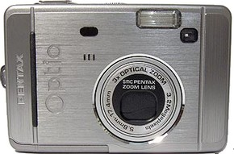
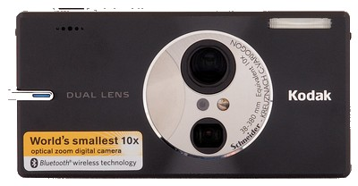
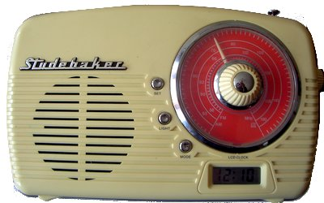
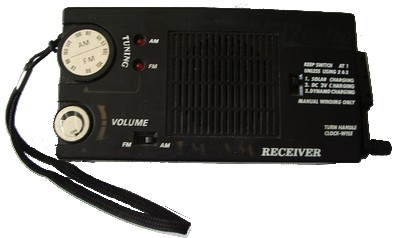
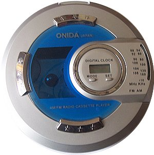
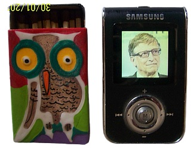
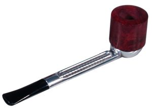

I beg to report to you that some functionalities of this site need javascript activated, and HTML5
I beg to report to you that some functionalities of this site need javascript activated, and HTML5
432hz SCOOTWAVE
Desde Covid-19 año 2
Home | Entrada | Nosotros | Comentarios | Links
About | Concepto | Transcurso | Acción
Nosotros, la gente detrás de 432hz SCOOTWAVE.
Operando sin dinero (no tenemos dinero, no ganamos dinero) y con una plantilla de una persona (un voluntario), ScootWave (y la revista SCOOT', su vástago) es la improbable fuente de scootering de vanguardia en la web.
El sitio web de ScootWave es un "contenedor" de texto, sonidos y vídeos, que se agregan, se mezclan, para constituir una instalación artística que permanece estática en los servidores, pero que se convierte en una performance cuando es vista por los internautas, y según Fluxus se convierte incluso en un happening, por ser algo interactivo; un arte que se experimenta, que se vive, que rompe los límites entre el scooter, el arte y la vida.
ScootWave está codificado en un viejo ordenador portátil con Windows XP, con programas gratuitos; nuestra cámara y la grabadora de sonido también tienen unos 15 años; nuestra conexión a Internet en casa es básica, así que tenemos que ir a un cibercafé para subir los archivos al alojamiento web. De hecho, la copia de seguridad de nuestro sitio está en una memoria USB.
Esas restricciones no nos molestan; la vida real no es 1536 kbps por segundo, ni 50 megapíxeles de resolución; vemos esas restricciones como la manera, el medio, de producir un objeto (de arte) cercano a la vida real.
¿Llegará ScootWave a la cultura dominante? Como harían los franceses, respondemos:
Flowery Poses by Meavy Boy is licensed under
a Attribution-NonCommercial-NoDerivatives 4.0 International License.
STUFF :
Mis hardwares a lo largo de los años (los utilizo o usé tal y como salieron de la caja; no cambié nada, ni el teclado ni el ratón, sólo añadí algunos softwares.)
- 1997 a 2003 : TUXON desktop computer : 14 inches monitor, Windows 98, AMD K6, 6 Gb HDD, 6 Mb RAM, Internet Explorer, Netscape, ClarisWorks, Irfanview. Un excelente ordenador. Dejó de funcionar por el alto nivel de humedad del país donde vivía. Todos los componentes se oxidaron.
- 2003 to 2009 : FUJITSU Siemens desktop computer : 15 inches monitor, Windows XP SP1, Pentium 4, 250 Gb HDD, 250 Mb RAM, Internet Explorer, Works, Irfanview. Un excelente ordenador también. Dejó de funcionar después de una mudanza al otro lado del Océano Atlántico. Sospecho que se cayó, lo que afectó al disco duro.
- 2005 al presente : Acer Aspire 3634 WLCI laptop computer : 15,5 inches monitor, Windows XP SP2, Intel Celeron M 380, 40 Gb HDD, 512 Mb RAM, Internet Explorer 8, Internet Explorer 6 portable, ClarisWorks, Irfanview. Por suerte, en ese momento, todavía tenía el CD de instalación de ClarisWorks; lo instalé en ese portátil y funciona bien. Un portátil excelente.
- 2015 to present : HP All-in-One desktop computer (second hand) : 20 inches monitor, Windows 10 Home, 64 bits, AMD E1-2500 APU, 1 Tb HDD, 6 Gb RAM, Internet Explorer 11, AbleWord, Irfanview. Funciona muy bien a pesar de su lento procesador (no juego a videojuegos, no edito mucho mis videos ni mis fotos).
Para el almacenamiento utilizo memorias USB, algunas tarjetas SD y los discos duros de mis ordenadores ; me desagrada totalmente el CD/DVD (siempre aparecen problemas para reproducirlos o grabarlos), incluso prefería las cintas VHS a esos CD/DVD ; me gustaban los disquetes, eran un medio de almacenamiento muy útil y eficiente. También me gustaba mucho la unidad Zip; a principios de los años 2000 tenía una unidad Iomega Zip 100 y discos Zip de 100 Mb de capacidad; era una gran solución para el almacenamiento, era similar a un disco duro externo, funcionaba bien, pero desgraciadamente este material no era fiable y dejó de funcionar después de 2 años.
Mis cámaras digitales

Pentax Optio S40
Comprada en 2004, todavía funciona.
Esta cámara funciona bien, tiene un sensor de 4 millones de píxeles, un zoom óptico de 3x, equivalente a 35-105mm en formato 35mm (no uso el zoom digital), y también puede grabar vídeos (320x240, 30fps). Funciona con dos pilas AA ; si uno no usa el flash está bien con pilas comunes, pero si uno usa el flash, las pilas recargables son obligatorias.

Kodak Easyshare V610
Comprada en 2005, todavia funciona.
Esta cámara funciona bien, tiene un sensor de 6 millones de píxeles, un zoom óptico de 10x, equivalente a 38-380mm en formato 35mm (no uso el zoom digital), y también puede grabar vídeos (640-480, 30fps). Se alimenta de una batería recargable que sigue funcionando como nueva después de dieciséis años de uso.
El único problema es que los ajustes de velocidad ISO y de nitidez no se mantienen en el modo automático, cuando uno apaga la cámara : se invierten a automático (por defecto) o hay que elegir un modo prederminado que obliga a varias manipulaciones cada vez que uno qiere tomar una foto.; en el modo automático las fotos suelen salir algo borrosas. Para corregirlo uso el efecto de nitidez ligera de Irfanview ; si no es satisfactorio uso el efecto AltaLux (un plugin de Irfanview) que funciona bien, este filtro acentúa también el contraste pero sigue siendo lo suficientemente ligero como para parecer "normal" y no sobre contrastado o saturado.
Por supuesto que esas dos cámaras no ofrecen una imagen con la calidad que ofrecen las cámaras actuales. Pero considero que una foto no es un sustituto de la realidad; la foto es un mundo en sí misma, y lo que muestra es el mundo que capta la cámara, que, tal vez, sea una especie de mundo paralelo.
Mis Radios

Studebaker Stude03, radio portatil AM/FM ; made in China.

Dynamo & Solar Radio ; made in Hong-Kong.
Tengo esas dos radios desde hace unos 13 años. Funcionan como nuevas y tienen buen sonido. El Studebaker funciona con pilas o una fuente de alimentación (220 voltios, pero aquí tenemos 110 voltios...). La dínamo y solar funciona con pilas, batería interna recargable, paneles solares (en la parte superior) y dínamo.
Escucho principalmente el canal Melodia stereo, que transmite en el 735 AM muchas y variadas músicas y canciones (rock, pop, latina, easy listening...). También transmite por internet ; en casa, sólo escucho la radio en mis radios.
Mi Reproductor de radio-casete : ONIDA (Japan) OJ-668DC ; ninguna indicación de origen; de hecho (Japón) forma parte del nombre de la marca, no significa que sea de Japón.

Siempre me ha gustado escuchar música en soportes analógicos de cinta magnética, es decir, en casetes (casetes compactos).
En 2010, compré este reproductor de casetes barato con radio AM/FM integrada. Es un aparato básico pero con buen sonido (uso auriculares Sony baratos) y funciona muy bien. Funciona con pilas (2 pilas AA) o con alimentación eléctrica. Tiene un interruptor de selección de cassette/radio, un interruptor de selección AM/FM, una rueda de pulgar para sintonizar, un dial para reproducir el cassette, uno para adelantar el cassette, otro para parar, y una rueda de pulgar para el nivel de volumen. Es una especie de walkman, por lo que en la parte trasera tiene un clip de sujeción; pero en realidad cualquier movimiento afecta a la reproducción, por lo que lo uso como walkman de escritorio.
La marca es ONIDA (Japón) y he encontrado su página web casaonidajapan.com, basada en Panama. En la página web se dice que sus inicios fueron en la India; hay una marca ONIDA en la India onida.com, pero no sé si están relacionadas.
Entre mi pequeña colección de cintas, escucho mucho mis cuatro álbumes del genial grupo The Pogues ; hay algunas de las mejores canciones del mundo en esas cintas.
My MP3 Player

Samsung YP-T7 X
Creo que compré ese reproductor mp3 entre 1999 y junio de 2001, todavía funciona como nuevo. Tiene el tamaño de una pequeña caja de cerillas. La pantalla es muy pequeña pero tiene una resolución aceptable.
Tiene una memoria de 512 Mb integrada, reproduce archivos MP3, OGG, WMA y Audio ASF, puede mostrar imágenes JPG, archivos TXT y PDF (el lector de pdf fue un plugin que vino después), transmite radio FM, que puede grabar. También es una grabadora de voz. Muchos parámetros son ajustables. Una pequeña joya, ¿no? Había 4 modelos disponibles: 128 Mb, 256 Mb, 512 Mb y 1 Gb de memoria; había un plugin para reproducir vídeos MPEG-4 en el modelo de 1 Gb. En la foto, el reproductor muestra una imagen en jpg de el Señor y Salvador de los ordenadores y de Internet.
No soy un artista, no soy un fotógrafo, soy un hombre cualquiera ; sólo hago esas páginas porque me gustan esas cosas, me parecen interesantes. Cuando miras por la ventana, a veces una escena te llama la atención ; a veces una vista de la calle, un edificio, me llama la atención y lo capto en la ventana que es la cámara, al igual que intento captar una visión del mundo en ese sitio web.
Tengo una especie de nostalgia por los años 90, y principios de los 2000',s, incluso por épocas anteriores ; me gustaban Windows 98, Windows XP, Yahoo, Geocities, Cityweb, Angelfire, HTML 3.2 y demás... Como me gustan las botas Chelsea y las de los Beatles, las cosas de Andy Warhol, el constructivismo, el futurismo, el cubismo, el rondocubismo, los coupés Renault 15 y 17, los monopatines Xootr, las boomboxes (radiocasetes)... Pero no me malinterpreten, admito que la tecnología actual tiene grandes características y las uso ampliamente.

Mi pipa sagrada Falcon, para comunicarme con los Dioses de la Red.